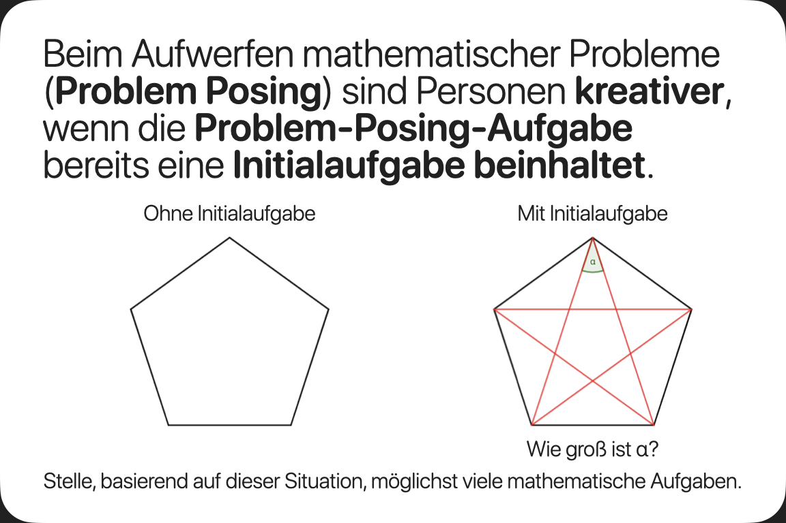
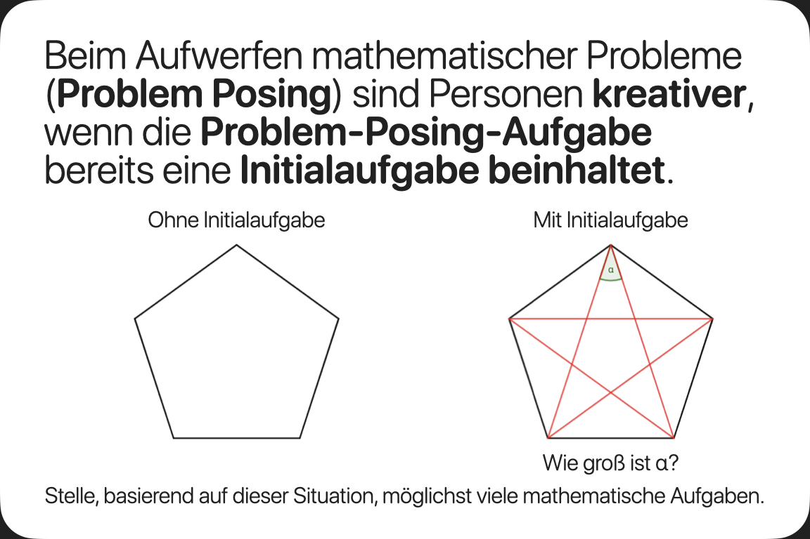

Grundlegendes
Diese Datenschutzerklärung soll die Nutzer dieser Website über die Art, den Umfang und den Zweck der Erhebung und
Verwendung personenbezogener Daten durch den Websitebetreiber Lukas Baumanns informieren.
Der Websitebetreiber nimmt Ihren Datenschutz ernst und behandelt Ihre personenbezogenen Daten vertraulich und
entsprechend der gesetzlichen Vorschriften. Da durch neue Technologien und die ständige Weiterentwicklung dieser
Webseite Änderungen an dieser Datenschutzerklärung vorgenommen werden können, empfehlen wir Ihnen sich die
Datenschutzerklärung in regelmäßigen Abständen wieder durchzulesen.
Definitionen der verwendeten Begriffe (z.B. “personenbezogene Daten” oder “Verarbeitung”) finden Sie in Art. 4
DSGVO.
Zugriffsdaten
Wir, der Websitebetreiber bzw. Seitenprovider, erheben aufgrund unseres berechtigten Interesses (s. Art. 6 Abs. 1
lit. f. DSGVO) Daten über Zugriffe auf die Website und speichern diese als „Server-Logfiles“ auf dem Server der
Website ab. Folgende Daten werden so protokolliert:
· Besuchte Website
· Uhrzeit zum Zeitpunkt des Zugriffes
· Menge der gesendeten Daten in Byte
· Quelle/Verweis, von welchem Sie auf die Seite gelangten
· Verwendeter Browser
· Verwendetes Betriebssystem
· Verwendete IP-Adresse
Reichweitenmessung & Cookies
Diese Website verwendet Cookies zur pseudonymisierten Reichweitenmessung, die entweder von unserem Server oder dem
Server Dritter an den Browser des Nutzers übertragen werden. Bei Cookies handelt es sich um kleine Dateien, welche
auf Ihrem Endgerät gespeichert werden. Ihr Browser greift auf diese Dateien zu. Durch den Einsatz von Cookies erhöht
sich die Benutzerfreundlichkeit und Sicherheit dieser Website.
Falls Sie nicht möchten, dass Cookies zur Reichweitenmessung auf Ihrem Endgerät gespeichert werden, können Sie dem
Einsatz dieser Dateien hier widersprechen:
· Cookie-Deaktivierungsseite der Netzwerkwerbeinitiative: http://optout.networkadvertising.org/?c=1#!/
· Cookie-Deaktivierungsseite der US-amerikanischen Website: http://optout.aboutads.info/?c=2#!/
· Cookie-Deaktivierungsseite der europäischen Website: http://optout.networkadvertising.org/?c=1#!/
Gängige Browser bieten die Einstellungsoption, Cookies nicht zuzulassen. Hinweis: Es ist nicht gewährleistet, dass
Sie auf alle Funktionen dieser Website ohne Einschränkungen zugreifen können, wenn Sie entsprechende Einstellungen
vornehmen.
Erfassung und Verarbeitung personenbezogener Daten
Der Websitebetreiber erhebt, nutzt und gibt Ihre personenbezogenen Daten nur dann weiter, wenn dies im gesetzlichen
Rahmen erlaubt ist oder Sie in die Datenerhebung einwilligen.
Als personenbezogene Daten gelten sämtliche Informationen, welche dazu dienen, Ihre Person zu bestimmen und welche
zu Ihnen zurückverfolgt werden können – also beispielsweise Ihr Name, Ihre E-Mail-Adresse und Telefonnummer.
Google Analytics
Diese Website nutzt aufgrund unserer berechtigten Interessen zur Optimierung und Analyse unseres Online-Angebots im
Sinne des Art. 6 Abs. 1 lit. f. DSGVO den Dienst „Google Analytics“, welcher von der Google Inc. (1600 Amphitheatre
Parkway Mountain View, CA 94043, USA) angeboten wird. Der Dienst (Google Analytics) verwendet „Cookies“ –
Textdateien, welche auf Ihrem Endgerät gespeichert werden. Die durch die Cookies gesammelten Informationen werden im
Regelfall an einen Google-Server in den USA gesandt und dort gespeichert.
Google LLC hält das europäische Datenschutzrecht ein und ist unter dem Privacy-Shield-Abkommen zertifiziert: https://www.privacyshield.gov/participant?id=a2zt000000001L5AAI&status=Active
Auf dieser Website greift die IP-Anonymisierung. Die IP-Adresse der Nutzer wird innerhalb der Mitgliedsstaaten der
EU und des Europäischen Wirtschaftsraum und in den anderen Vertragsstaaten des Abkommens gekürzt. Nur in
Einzelfällen wird die IP-Adresse zunächst ungekürzt in die USA an einen Server von Google übertragen und dort
gekürzt. Durch diese Kürzung entfällt der Personenbezug Ihrer IP-Adresse. Die vom Browser übermittelte IP-Adresse
des Nutzers wird nicht mit anderen von Google gespeicherten Daten kombiniert.
Im Rahmen der Vereinbarung zur Auftragsdatenvereinbarung, welche wir als Websitebetreiber mit der Google Inc.
geschlossen haben, erstellt diese mithilfe der gesammelten Informationen eine Auswertung der Websitenutzung und der
Websiteaktivität und erbringt mit der Internetnutzung verbundene Dienstleistungen.
Die von Google in unserem Auftrag erhobenen Daten werden genutzt, um die Nutzung unseres Online-Angebots durch die
einzelnen Nutzer auswerten zu können, z. B. um Reports über die Aktivität auf der Website zu erstellen, um unser
Online-Angebot zu verbessern.
Sie haben die Möglichkeit, die Speicherung der Cookies auf Ihrem Gerät zu verhindern, indem Sie in Ihrem Browser
entsprechende Einstellungen vornehmen. Es ist nicht gewährleistet, dass Sie auf alle Funktionen dieser Website ohne
Einschränkungen zugreifen können, wenn Ihr Browser keine Cookies zulässt.
Weiterhin können Sie durch ein Browser-Plugin verhindern, dass die durch Cookies gesammelten Informationen
(inklusive Ihrer IP-Adresse) an die Google Inc. gesendet und von der Google Inc. genutzt werden. Folgender Link
führt Sie zu dem entsprechenden Plugin: https://tools.google.com/dlpage/gaoptout?hl=de
Alternativ verhindern Sie mit einem Klick auf diesen Link (WICHTIG: Opt-Out-Link einfügen), dass Google Analytics
innerhalb dieser Website Daten über Sie erfasst. Mit dem Klick auf obigen Link laden Sie ein „Opt-Out-Cookie“
herunter. Ihr Browser muss die Speicherung von Cookies also hierzu grundsätzlich erlauben. Löschen Sie Ihre Cookies
regelmäßig, ist ein erneuter Klick auf den Link bei jedem Besuch dieser Website vonnöten.
Hier finden Sie weitere Informationen zur Datennutzung durch die Google Inc.:
· https://policies.google.com/privacy/partners?hl=de (Daten, die
von Google-Partnern erhoben werden)
· https://adssettings.google.de/authenticated (Einstellungen über
Werbung, die Ihnen angezeigt wird)
· https://policies.google.com/technologies/ads?hl=de (Verwendung
von Cookies in Anzeigen)
Rechte des Nutzers
Sie haben als Nutzer das Recht, auf Antrag eine kostenlose Auskunft darüber zu erhalten, welche personenbezogenen
Daten über Sie gespeichert wurden. Sie haben außerdem das Recht auf Berichtigung falscher Daten und auf die
Verarbeitungseinschränkung oder Löschung Ihrer personenbezogenen Daten. Falls zutreffend, können Sie auch Ihr Recht
auf Datenportabilität geltend machen. Sollten Sie annehmen, dass Ihre Daten unrechtmäßig verarbeitet wurden, können
Sie eine Beschwerde bei der zuständigen Aufsichtsbehörde einreichen.
Löschung von Daten
Sofern Ihr Wunsch nicht mit einer gesetzlichen Pflicht zur Aufbewahrung von Daten (z. B. Vorratsdatenspeicherung)
kollidiert, haben Sie ein Anrecht auf Löschung Ihrer Daten. Von uns gespeicherte Daten werden, sollten sie für ihre
Zweckbestimmung nicht mehr vonnöten sein und es keine gesetzlichen Aufbewahrungsfristen geben, gelöscht. Falls eine
Löschung nicht durchgeführt werden kann, da die Daten für zulässige gesetzliche Zwecke erforderlich sind, erfolgt
eine Einschränkung der Datenverarbeitung. In diesem Fall werden die Daten gesperrt und nicht für andere Zwecke
verarbeitet.
Widerspruchsrecht
Nutzer dieser Webseite können von ihrem Widerspruchsrecht Gebrauch machen und der Verarbeitung ihrer
personenbezogenen Daten zu jeder Zeit widersprechen.
Wenn Sie eine Berichtigung, Sperrung, Löschung oder Auskunft über die zu Ihrer Person gespeicherten
personenbezogenen Daten wünschen oder Fragen bzgl. der Erhebung, Verarbeitung oder Verwendung Ihrer
personenbezogenen Daten haben oder erteilte Einwilligungen widerrufen möchten, wenden Sie sich bitte an die
E-Mail-Adresse des Webseitenbetreibers.


 
